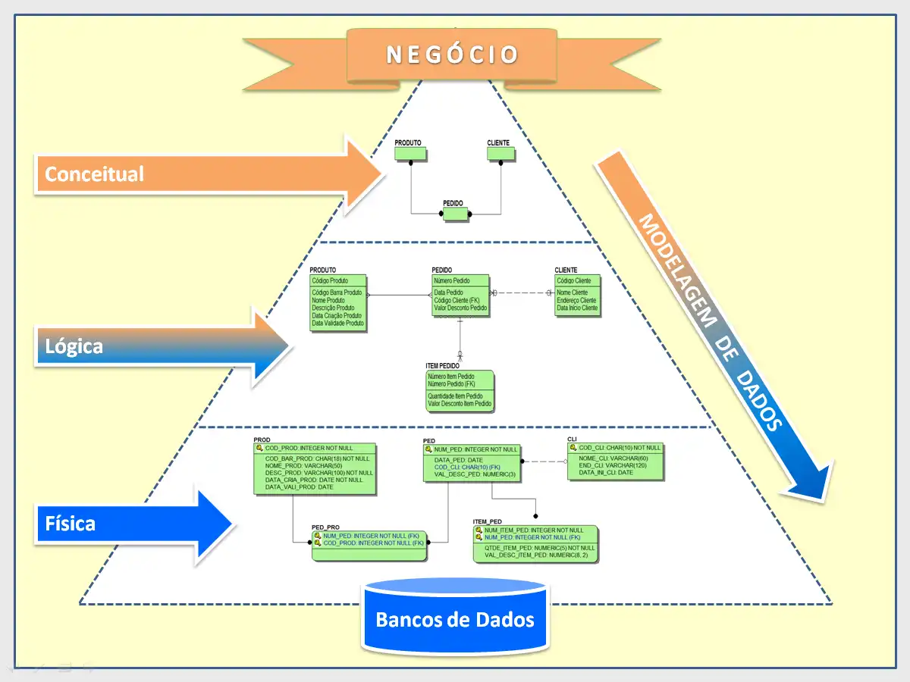

Modelagem de dados
No início da disciplina, conhecemos a modelagem de dados, que é a forma como iremos representar os dados no sistema do banco de dados.
Primeiro, devemos conhecer o modelo de negócio, depois conceitualizar com o Diagrama Entidade Relacionamento, em seguida elaborar o modelo lógico e por fim transformar em código SQL.
Modelo de Negócio recolhemos informações de com deverá se comportar o banco de dados;
Modelo Conceitual desenvolvemos o diagrama entidade relacionamento, que será base para conseguirmos estabalecer relacionamento entre as entidades do banco de dados;
Modelo Lógico transformamos o conceito em tabelas;
Modelo Físico transcrevemos a lógica em código SQL.
Diagrama ER
O Diagrama Entidade Relacionamento é usado para nos ajudar a enxergar como cada entidade irá se relacionar com outra no banco de dados. Também usamos convensões para nos auxiliar na identificação de elementos e informações no diagrama. Segue um exemplo de Diagrama ER:

Bancos de dados relacionais
Esses são bancos de dados que estruturam seus dados em tabelas, onde cada coluna possui um tipo de dado e espera receber um valor. Com isso, é possível organizar as informações do sistema e estabelecer relações entre tabelas. A linguagem que capacita o banco fazer operações é a SQL, linguagem de consulta estruturada Alguns exemplos de Sistemas Gerenciadores de Banco de Dados Relacionais são: PostgreSQL, MySQL e SQL Server.
Um ponto importante para o Sistema Gerenciador de Banco de Dados é a capacidade de conter: Atomicidade, Consistência, Isolamento e Durabilidade.
Atomicidade garantia de realizar uma ação completamente, ou não a realizar;
Consistência é a capacidade de proteger a integridade dos dados;
Isolamento é a garantia de isolar operações que estejam ocorrendo de forma simuntânea, ou seja, uma operação não interfere na outra;
Durabilidade garante que os dados serão preservados após as operações terem sido realizadas.
Modelo Físico
O modelo físico é também conhecido por "baixo nível", pois é onde o código SQL é desenvolvido. Nessa parte da modelagem, precisamos por em pratica a lógica do projeto. Para isso usamos comandos: DDL, DML, DQL e, em alguns casos, DTL e DCL. Esses dois últimos não chegamos a usar.
DDL Data Definition Language - são comandos para criar a tabela(CREATE TABLE), alterá-la(ALTER TABLE) e excluí-la(DROP TABLE);
DML Data Manipulation Language - são comandos para inserir dados na tabela(INSERT INTO), atualizar(UPDATE) e excluir (DELETE FROM);
DQL Data Query Language - são comandos para consultar os dados do banco. SELECT é o principal componente para consultas, mas há outros elementos que podem ser usados com ele para deixar mais precisa a busca:
Exemplos:
GROUP BY agrupa por alguma coluna específica;
ORDER BY ordena crescente ou decrescente(DESC);
JOIN usado para unir valores de tabelas;
Funções são usadas para nos retornar na consulta algum valor ou cálculo específico. Por exemplo: AVG(), SUM(), MIN(), MAX()

Podemos usar diversos outros comandos em nossas consultas para obter diferentes resultados. Temos a possibilidade de utilizar consulta dentro de consulta, quando não temos uma informação ou queremos automatizar um processo.
Por fim, desenvolvemos um projeto de um banco de dados de uma instituição de ensino. Nesse projeto, coletamos informações com o cliente, elaboramos o Diagrama ER e escrevemos o código SQL: projeto sistema educacional

Link para o repositório das atividades de Banco de dados Relacionais: Diagramas ER e Exercicios
Normalização
A normalização é um processo onde os dados são organizados de maneira a deixar o banco de dados mais flexível, eliminando redundâncias e dependencias inconsistentes. Nesse processo, muitas vezes é necessário criar novas tabelas e reestabelecer as relações entre elas.
1 Forma Normal nessa forma, os dados precisam ser atômicos, ou seja, não podem ser divisíveis, mas devem ser um único valor.
2 Forma Normal na segunda forma normal, não deve haver dependencias parciais(atributos não chave que não dependem funcionalmente da chave primária), e deve estar na 1FN.
3 Forma Normal por último, nessa forma normal, são criadas tabelas para separar colunas que não se relacione com a chave primária. Além disso, deve-se estar na 2FN para ser enquadrada na 3FN.
As relações entre entidades devem estar, pelo menos, normalizadas nas três primeiras Formas Normais(há mais três) para serem consideradas boas.
NoSQL
Os bancos de dados NoSQl foram desenvolvidos para resolver os problemas que os modelos relacionais estavam enfrentando: dificuldade para escalar e para trabalhar com grandes quantidades de dados e, principal, incompatibilidade entre a estrutura de armazenamento (tabelas) e a estrutura do documento.
Os modelos NoSQL também tem tipos que diferem entre si:
Chave-Valor permitem que o sistema armazene seus dados sem um formato específico, sendo armazenados como duplas de chaves e seus respectivos valores.
Documentos armazena coleções e documentos, como vídeos, foto, arquivo txt, etc.
Orientado a Colunas guardam seus dados divididos por colunas, permitindo que sejam facilmente acessadas as colunas de múltiplos registros.
Grafos essa é uma abordagem útil quando é necessário fazer consultas complexas. Muito usado e redes sociais e mecanismos de recomendação.

O banco de dados NoSQL que nós utilizamos foi o Mongo DB. Esse é um banco de dados orientado a documentos. É muito utilizado pelo seu alto desempenho e por suportar escalabilidade horizontal e vertical. Além disso, ele é multiplataforma.

Ver todos os projetos: